很抱歉这个系列又中断了3个季度。俺博客要写的话题比较多，分身乏术啊 :(
经过几位热心读者的催促，俺今天再发一篇。
“五四大游行”之后，学运进入一段低潮期，持续了大约一周。直到开始绝食的5月11日，学运才迎来又一个高潮。
在这一周里，学生方面没有发生啥转折性的事件，但是有些不算大也不算小的事件，值得拿出来聊一聊。首先要聊的就是“复课风波”。
在之前的博文，已经介绍了4月下旬发起的“高校罢课”。到了五月上旬，学生内部针对“是否复课”的问题，开始产生分歧。
温和派的学运参与者认为：“四二七大游行”是一个阶段性的胜利——学生的诉求已经得到表达，也让当局见识了学生运动的规模和威力。等到“五四大游行”结束之后，就可以全面复课了。
激进派的学运参与者持有不同看法，他们认为：“四二六社论”对“动乱”的定性没有改变，不能就此罢休，否则前功尽弃。至少要闹到朝廷方面改变“动乱”的定性。
“五四大游行”那天，各个高校齐聚天安门广场。然后由北高联的代表周勇军宣读《五四宣言》。宣读完之后，周勇军擅自宣布说：从明日起全面复课。
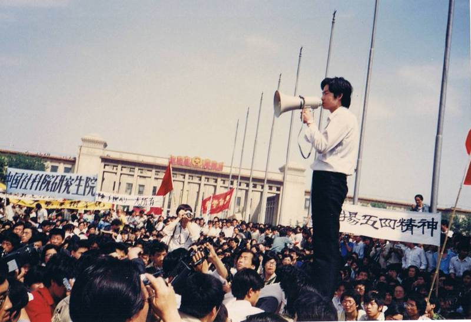
（周勇军宣布复课，摘自香港记者蔡淑芳的博客）
为啥说是“擅自宣布”捏？周勇军虽然身为北高联常委，但是这么重大的决定，显然需要北高联常委会的讨论和表决。当时在现场的几个北高联常委（吾尔开希、封从德、王超华、张铭），事先都没有料到周勇军会作出单方面的宣布。
因为这事儿，周勇军在5月9日被开除出北高联。不过这事儿也不能全怪周勇军。实际上当时北高联的几个常委，沟通出现问题，才导致如此。可惜他们自己没有意识到这点。直到六四屠城之后，有17个学生领袖流亡巴黎，他们在1991年开了一个《八九学运回顾与反思研讨会》，几个当事人凑一块儿回忆当时的情形，才意识到：那时的沟通出了些问题。
针对1991年的研讨会，后来出了一本书《回顾与反思——六四流亡學生17人》，记录了所有与会者的发言。此书的
“五四大游行”之后，除了北大和北师大，其它大部分高校基本上都复课了。北师大拒绝复课，主要是因为吾尔开希。他是北师大学生领袖，在北师大很有影响力。他反对复课。
至于北大，有些人同意复课，有些人反对。双方僵持不下。王丹在他的回忆录中，转载了一篇大字报，题为《复课？岂有此理！》，内容如下（注：《王丹回忆录——从六四到流亡》原书是繁体）：
由于两派的对立很严重，互相都无法说服对方，于是北大筹委会搞了一个投票（逐个宿舍发调查表）。投票结果是：
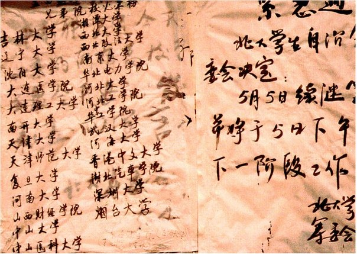
（紧急通知 北大学生自治会筹委会决定：5月5日继续罢课）
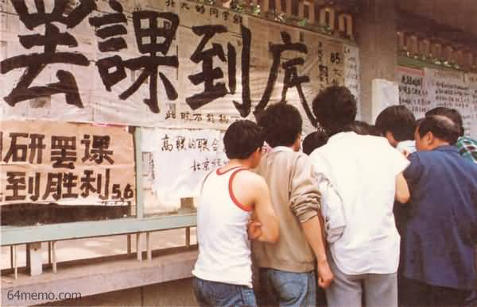
（北大三角地的大字版）
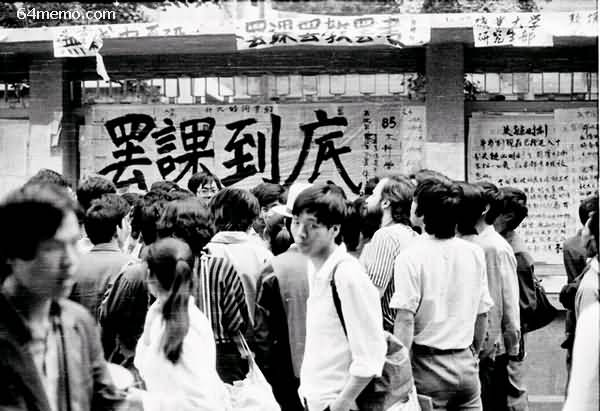
（北大三角地的大字版）
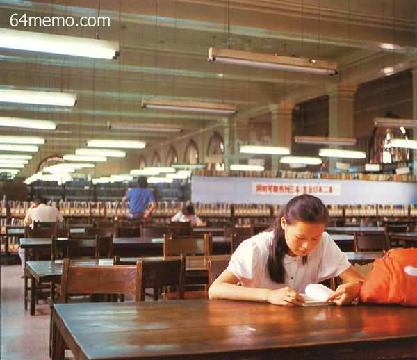
（空荡荡的教室）
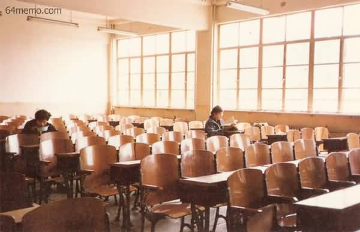
（空荡荡的教室）
可能是因为北高联的几个常委对周勇军“擅自宣布复课”的行为很不满，在5月9日发了一个北高联声明，其中提到：
1. 5月4日周勇军擅自以北高联名义宣布复课的决定作废；
2. 将周勇军开除出北高联；
3. 5月10日中午，北京各高校学生到政法大学集合，骑车环城游行。
（关于第三点提到的“骑车游行”，后面俺会介绍）
上述这些都是“北高联”的事情。再来说说“对话团”的事情。
在本系列前面的博文，已经介绍了5月3日“对话团成立的经过”。在当时成立大会上，确定了对话团的三个主要对话方向：
1. 关于此次运动的定性
（一方面反驳政府对“动乱”的定性；另一方面想清楚“自我定性”）
2. 关于深化改革
（主要是针对当时政治体制的问题，提出建设性的意见）
3. 关于宪法第35条
（这条又包括三个方面：言论自由和新闻出版自由；结社与集会的自由；游行示威的自由）
到了5月5日，召开了对话团的第一次大会。会上把上述三个方向具体落实，并拟定了29个“分主题”。出席的代表组成了各个分主题的预备班子。
上述三个方向：第1个由耿凉鹏（清华大学）负责；第2个由张志新（政法大学）负责；第3个由项小吉（对话团召集人，政法大学）负责。
当天发布了对话团的《一号公告》。
这天，项小吉、沈彤以及另外2人，去信访局递交请愿书。三个信访局（中办、国务院、人大）的局长接待了对话团的学生代表。
学生代表提出说：希望政府方面能够在5月8日，给一个答复。学生代表同时也强调说：这不是设定最后期限；学生是以真诚的态度展开对话，希望政府方面能够尽快准备。
以下是请愿书的正文，出自香港中文大学学生会出版的《八九中國民運資料冊》（注：原文内容是繁体中文）
这天，对话团的规模从40人扩大到50人，包含来自29个院校的学生。这些学生大都是硕士生或博士生。
然后对话团的代表又去了信访局，没有得到任何答复。这天，接待他们的信访局少了一个，只剩下中办和国务院的信访局。
当天发布了对话团的《二号公告》。
这天，对话团的学生第三次去了信访局。接待他们的只剩下中办信访局的领导。对方依然没有答复。
当天发布了对话团的《三号公告》。
5月6日递交请愿书之后，一直到5月11日，朝廷方面都没有答复。为啥捏？
朝廷中的保守派（以李鹏为首），显然不想跟学生正经对话（保守派的如意算盘是“激化矛盾”）。而朝廷中的改革派（以赵紫阳为首），采取了“不恰当的拖延战术”。关于这点，俺在《回顾六四系列[26]：成立对话代表团》一文有分析，此处不再罗嗦。
实际上，直到学生开始发动绝食抗议（12日之后），信访局才匆忙通知对话代表团，答应开始对话。关于这事儿，下一篇博文再聊。
虽然处于低潮时期，但北京各大高校的学生们还是作了很多“校园民主化”的工作。大致有如下几项。
几个知名的高校创办了学生自己的刊物，最有名的大概是北大创办的《新闻导报》。北大的优势在于——它的中文系有一个【作家班】，里面的学员都是小有名气的青年作家。作家班里面的某些学员自然成了《新闻导报》的骨干分子，其中张伯笠成为《新闻导报》的总编。这份报刊其实在4月下旬就已经创刊了，到了5月初，又陆续出了几期。
张伯笠在其自传《逃亡者》中介绍了这份杂志的诞生过程：
如果你在天朝读过书，应该明白：天朝的中学和高校，学生会都是由校方掌控的，形同虚设。
所以在“五四大游行”之后，北京的很多高校改组了原有的官方学生会。以下内容摘自陈小雅写的《八九民运史》，介绍了北大改组官方学生会的情形：
话说当时的天朝新闻界，对真理部（中宣部）一直很不满。再加上前不久，上海市委取缔了《世界经济导报》，更加让新闻界的同仁不爽。
于是在5月9日这天下午，《中国青年报》记者部主任郭家宽和科技部主任李大同，拿着一份有1013名新闻工作者签名的请愿书，送交中华全国新闻工作者协会，请愿书要求与中央主管宣传工作的领导人对话。
这1013名签名者分别来自《人民日报》、新华社、《经济日报》、《中国青年报》、《北京日报》、《北京晚报》等30多家首都新闻单位。这些可都是大牌的媒体啊，非常有分量。
以下是请愿书的三方面内容：
离开“记协”后，学生们意犹未尽，又列队游行到《人民日报》报社的门口，主要是为了抗议“四二六社论”。在《人民日报》报社的门口，学生们高喊：
由于这次游行的规模较小，俺只找到一张当时的照片（如下）
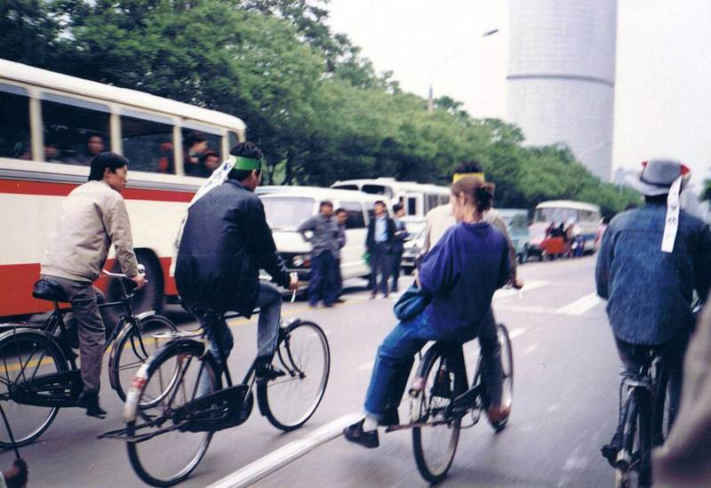
在5月9日的小规模游行之后，北高联在5月10日发起了一次更大规模的游行，人数大约在1万到3万人之间。这次游行的目的是：
1. 抗议政府拖延对话
2. 继续声援新闻界记者
游行的口号大致有如下一些：
至于“袁立本”，是北京市委秘书长，因为参加了“袁木求愚”的四·二九对话而臭名远扬。
凑巧的是——这两人的名字刚好颠倒）
跟以往的游行不同的是，510游行以自行车为主。这是整个六四运动期间，第一次大规模的自行车游行。因为之前的“四二七大游行”和“五四大游行”都是徒步的方式，大学生们累得够呛。改为自行车的方式，可以大大节省体力。
值得一提的是：这次游行中，已经有香港中文大学的学生参与其中。由此可见香港的大学生对六四运动的热情支持。
这次游行保留下来的照片比较多，俺把相关照片汇总如下。
下面这几张照片来自香港记者蔡淑芳的博客。
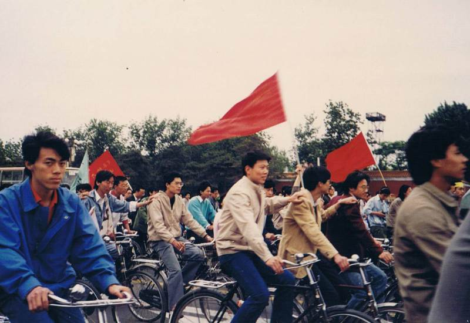 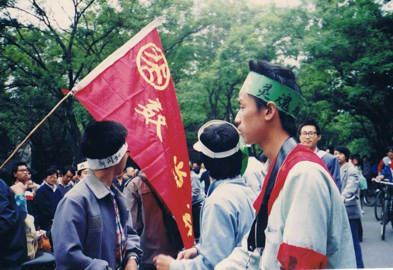 
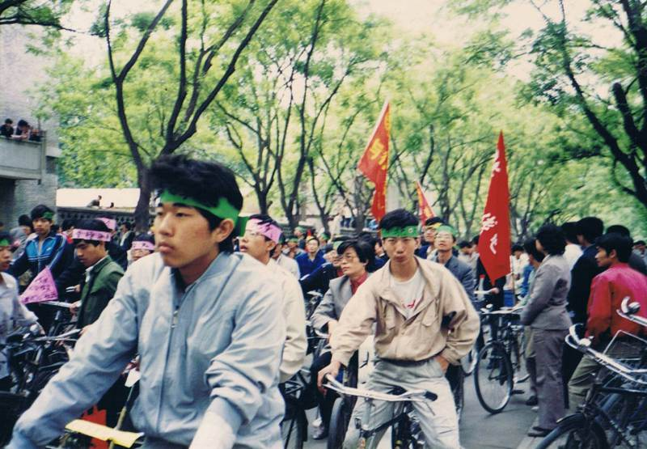 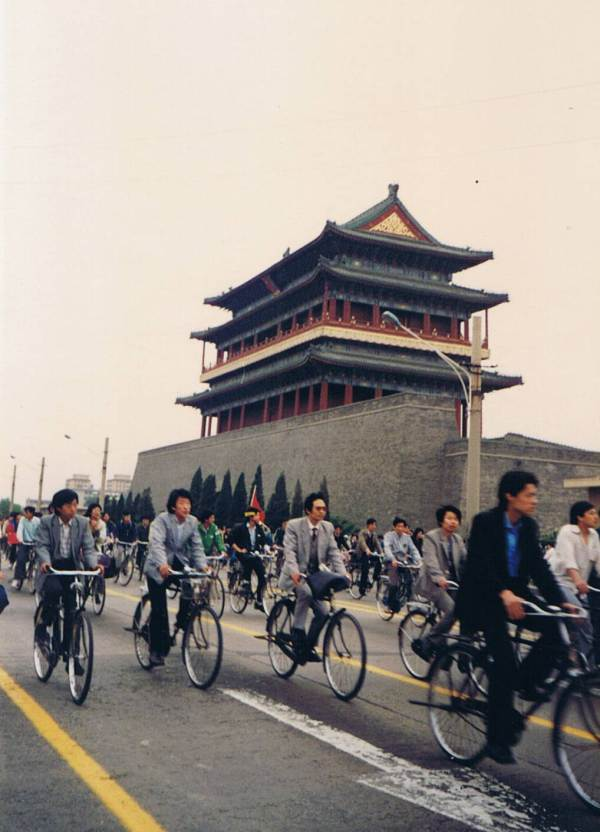 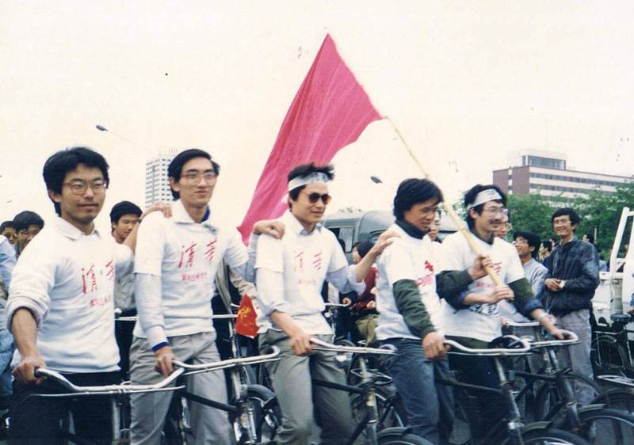 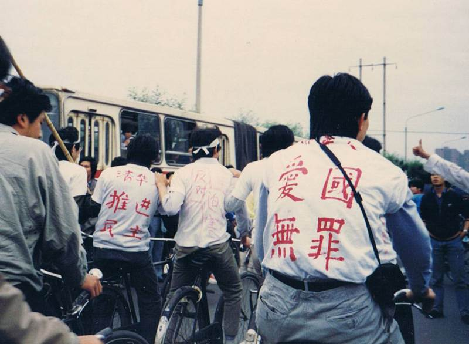
下面这几张照片来自封从德创办的网站六四档案。
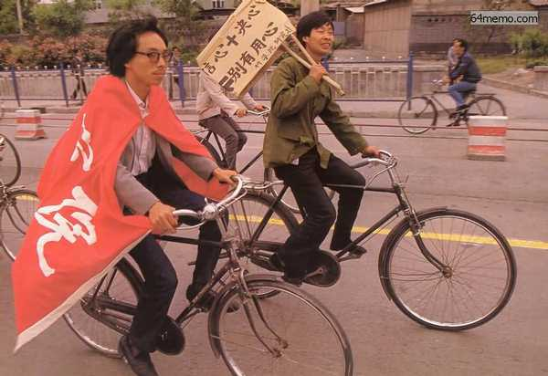
（某学生的标语：
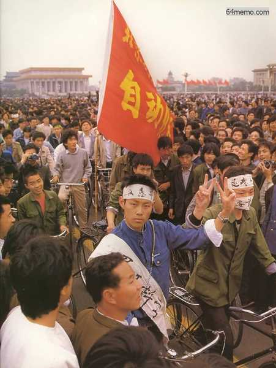
（游行到达广场，某学生头上的布条写着：
最后这张照片来自维基百科，里面这位就是大名鼎鼎的浦志强大律师。当年他是政法大学参与六四学运的骨干。在这次“自行车游行”后不久，他成为政法大学首批参与绝食的学生（本系列后面博文会介绍“绝食抗议”，到时候他还会出场）。
（浦志强身上的标语写着：
顺便说一下：
2014年5月，他因参与“纪念六四研讨会”被关押。截止俺写本文时，尚未释放。请大伙儿关注他！之前俺曾经发过一篇《每周转载：网友热议“寻衅滋事”和“泄漏国家机密”的罪名》，介绍因为这次研讨会而被捕的多名政治异议人士。
回到本系列的目录
经过几位热心读者的催促，俺今天再发一篇。
“五四大游行”之后，学运进入一段低潮期，持续了大约一周。直到开始绝食的5月11日，学运才迎来又一个高潮。
在这一周里，学生方面没有发生啥转折性的事件，但是有些不算大也不算小的事件，值得拿出来聊一聊。首先要聊的就是“复课风波”。
★复课风波
◇学生内部的分歧
在之前的博文，已经介绍了4月下旬发起的“高校罢课”。到了五月上旬，学生内部针对“是否复课”的问题，开始产生分歧。
温和派的学运参与者认为：“四二七大游行”是一个阶段性的胜利——学生的诉求已经得到表达，也让当局见识了学生运动的规模和威力。等到“五四大游行”结束之后，就可以全面复课了。
激进派的学运参与者持有不同看法，他们认为：“四二六社论”对“动乱”的定性没有改变，不能就此罢休，否则前功尽弃。至少要闹到朝廷方面改变“动乱”的定性。
◇分歧的公开化——周勇军擅自宣布复课
“五四大游行”那天，各个高校齐聚天安门广场。然后由北高联的代表周勇军宣读《五四宣言》。宣读完之后，周勇军擅自宣布说：从明日起全面复课。
（周勇军宣布复课，摘自香港记者蔡淑芳的博客）
为啥说是“擅自宣布”捏？周勇军虽然身为北高联常委，但是这么重大的决定，显然需要北高联常委会的讨论和表决。当时在现场的几个北高联常委（吾尔开希、封从德、王超华、张铭），事先都没有料到周勇军会作出单方面的宣布。
因为这事儿，周勇军在5月9日被开除出北高联。不过这事儿也不能全怪周勇军。实际上当时北高联的几个常委，沟通出现问题，才导致如此。可惜他们自己没有意识到这点。直到六四屠城之后，有17个学生领袖流亡巴黎，他们在1991年开了一个《八九学运回顾与反思研讨会》，几个当事人凑一块儿回忆当时的情形，才意识到：那时的沟通出了些问题。
针对1991年的研讨会，后来出了一本书《回顾与反思——六四流亡學生17人》，记录了所有与会者的发言。此书的
2.2.3 和 2.7.3 章节，谈到了当时的“复课风波”（由于篇幅太长，俺就不转贴出来了）。◇北大和北师大抵制“复课”
“五四大游行”之后，除了北大和北师大，其它大部分高校基本上都复课了。北师大拒绝复课，主要是因为吾尔开希。他是北师大学生领袖，在北师大很有影响力。他反对复课。
至于北大，有些人同意复课，有些人反对。双方僵持不下。王丹在他的回忆录中，转载了一篇大字报，题为《复课？岂有此理！》，内容如下（注：《王丹回忆录——从六四到流亡》原书是繁体）：
聽說市高聯宣布即日復課，我們有些異議。衡諸目前形勢：一，學運至今，除了政府的態度有所緩和外，我們沒取得任何實質性的進展；二。目前的學運已正在全國範圍內蓬勃展開，上海，西安，天津，長沙等地的同學們紛紛行動起來支援北京（尤其是北大），這是這次運動的一面先鋒大旗，絕不能無緣無故的倒下；三。參加這幾次遊行的同學對首都群眾夾道歡迎的熱烈場面記憶猶新，我們的要求道出了廣大人民的群眾心聲，並且他們對學運寄予深切的期望......这篇大字报基本上可以代表那些拒绝复课的同学的立场。
罷課，遊行，散發傳單和發表演講，是我們向廣大群眾進行宣傳，對政府施加壓力的手段，失去這些手段就失去了對政府的壓力。復課後產生的消極影響是致命的，全國支持我們的人民將大失所望，在他們的心中將產生‘學生畢竟還是孩子，把學運當兒戲，想鬧就鬧，想收就收，看來永遠成不了氣候’的壞印象，以後要再想得到他們的支持也幾乎不可能。而復課後最得意的可能就是政府了。
由于两派的对立很严重，互相都无法说服对方，于是北大筹委会搞了一个投票（逐个宿舍发调查表）。投票结果是：
有效票1268张支持罢课的学生明显占上风，于是北大继续罢课。下面这几张是当时的照片，摘自封从德创办的网站六四档案，拍摄时间大约在5月5日至5月9日之间。
支持继续罢课占 64.2% 支持复课占 24.0% 弃权票占 11.8%
（紧急通知 北大学生自治会筹委会决定：5月5日继续罢课）
（北大三角地的大字版）
（北大三角地的大字版）
（空荡荡的教室）
（空荡荡的教室）
◇北高联宣布“继续罢课”
可能是因为北高联的几个常委对周勇军“擅自宣布复课”的行为很不满，在5月9日发了一个北高联声明，其中提到：
1. 5月4日周勇军擅自以北高联名义宣布复课的决定作废；
2. 将周勇军开除出北高联；
3. 5月10日中午，北京各高校学生到政法大学集合，骑车环城游行。
（关于第三点提到的“骑车游行”，后面俺会介绍）
★对话代表团的运作
上述这些都是“北高联”的事情。再来说说“对话团”的事情。
◇5月5日——第一次大会
在本系列前面的博文，已经介绍了5月3日“对话团成立的经过”。在当时成立大会上，确定了对话团的三个主要对话方向：
1. 关于此次运动的定性
（一方面反驳政府对“动乱”的定性；另一方面想清楚“自我定性”）
2. 关于深化改革
（主要是针对当时政治体制的问题，提出建设性的意见）
3. 关于宪法第35条
（这条又包括三个方面：言论自由和新闻出版自由；结社与集会的自由；游行示威的自由）
到了5月5日，召开了对话团的第一次大会。会上把上述三个方向具体落实，并拟定了29个“分主题”。出席的代表组成了各个分主题的预备班子。
上述三个方向：第1个由耿凉鹏（清华大学）负责；第2个由张志新（政法大学）负责；第3个由项小吉（对话团召集人，政法大学）负责。
当天发布了对话团的《一号公告》。
◇5月6日——递交请愿书
这天，项小吉、沈彤以及另外2人，去信访局递交请愿书。三个信访局（中办、国务院、人大）的局长接待了对话团的学生代表。
学生代表提出说：希望政府方面能够在5月8日，给一个答复。学生代表同时也强调说：这不是设定最后期限；学生是以真诚的态度展开对话，希望政府方面能够尽快准备。
以下是请愿书的正文，出自香港中文大学学生会出版的《八九中國民運資料冊》（注：原文内容是繁体中文）
中共中央、全國人大常委會、國務院：
最近北京及全國各地高校學生通過遊行請願等方式，反覆表達了同
黨和政府對話的要求。黨和政府領導人也多次以不同方式表示願意和學生
對話，共同商討解決大家共同關心的問題。我們作為北京高校學生民主選
舉產生的代表，本看廣大同學幫助黨和政府改進工作，推進我國改革開放
和現代化進程的基本態度，懇切請求儘快同黨中央、全國人大常委會和國
務院就當前的學生民主愛國運動、深化政治經濟體制改革和推進民主法制
建設等問題，進行真誠的建設性的公開對話。我們希望中共中央、全國人
大常委會和國務院的代表，儘快同我們約定時間地點，就對話程序事宜進
行協商，以利對話的順利進行。我們請求根據新聞自由原則，允許新間界
對這次對話進行採訪，並全面公開，準確地進行報道。
（我們準備於5月8日下午廾时左右前來聽取答覆。）
此致
敬禮
◇5月8日——请愿书没有回音
这天，对话团的规模从40人扩大到50人，包含来自29个院校的学生。这些学生大都是硕士生或博士生。
然后对话团的代表又去了信访局，没有得到任何答复。这天，接待他们的信访局少了一个，只剩下中办和国务院的信访局。
当天发布了对话团的《二号公告》。
◇5月11日——请愿书依然没有回音
这天，对话团的学生第三次去了信访局。接待他们的只剩下中办信访局的领导。对方依然没有答复。
当天发布了对话团的《三号公告》。
◇为啥朝廷方面迟迟不答复？
5月6日递交请愿书之后，一直到5月11日，朝廷方面都没有答复。为啥捏？
朝廷中的保守派（以李鹏为首），显然不想跟学生正经对话（保守派的如意算盘是“激化矛盾”）。而朝廷中的改革派（以赵紫阳为首），采取了“不恰当的拖延战术”。关于这点，俺在《回顾六四系列[26]：成立对话代表团》一文有分析，此处不再罗嗦。
实际上，直到学生开始发动绝食抗议（12日之后），信访局才匆忙通知对话代表团，答应开始对话。关于这事儿，下一篇博文再聊。
★校园民主化的推进
虽然处于低潮时期，但北京各大高校的学生们还是作了很多“校园民主化”的工作。大致有如下几项。
◇学生自办刊物
几个知名的高校创办了学生自己的刊物，最有名的大概是北大创办的《新闻导报》。北大的优势在于——它的中文系有一个【作家班】，里面的学员都是小有名气的青年作家。作家班里面的某些学员自然成了《新闻导报》的骨干分子，其中张伯笠成为《新闻导报》的总编。这份报刊其实在4月下旬就已经创刊了，到了5月初，又陆续出了几期。
张伯笠在其自传《逃亡者》中介绍了这份杂志的诞生过程：
《新闻导报》首先出了个试刊号，汇集了学潮初期的宣言，诗歌、请愿七条以及一些三角地大字报，印数只有五百，沈彤、杨涛等拿到记者会发行，被一抢而光。朝廷方面当然不会容忍这份报纸。吴仁华写的《八九天安门事件大事记》提到了中共当局对《新闻导报》的重重阻挠。
......
《新闻导报》第二期和第三期很快与读者见面了，这两期集中了一些重要文章，如纪念“五四”运动七十周年的社论，“人民日报的历史功绩”的评论等文章，以及“我们反对什么？我们拥护什么？”还有我写的郭海峰的专访“我以我血荐轩辕”，王丹的专访“王丹，男子汉”等。这两期我们从版式设计上有很大进步，另外多打了六张蜡纸，后每期的印数增加了数千。
报导文学作家贾鲁生从山东回京后到北大看我时告诉我，他在济南的书摊上看到卖《新闻导报》，一份的价格竟高达七十元人民币。
在勺园的各国留学生也派人找我们购买，每次买二百份，给二百美金。我也明白那些外国留学生的用意，他们不敢向我们捐款，恐怕给我们带来“里通外国”的麻烦，所以用这种方式支持我们办报。
中共当局对《新闻导报》的出版设置了重重障碍，指令任何印刷厂不得接受《新闻导报》的印刷业务；任何有复印机的单位、个人不得复印《新闻导报》，所有的新闻机构均不得向《新闻导报》提供任何可以利用的材料和传播的机会。除了北大的《新闻导报》，人民大学创办了《人民之声》，南开大学创办了《宽容》杂志。一些知名的高校（北大、人大、北师大）还搞起了学生自己的广播站，进行无线电广播。
目前，《新闻导报》电脑排字、油印形式出版。每次印刷一千份左右。每期四版，一版、二版为要闻和政论，三版是文学作品，日前主要刊登悼念胡耀邦的挽联、诗歌，四版为新闻提要，包括外电对学运的报导。
◇改选官方的学生会
如果你在天朝读过书，应该明白：天朝的中学和高校，学生会都是由校方掌控的，形同虚设。
所以在“五四大游行”之后，北京的很多高校改组了原有的官方学生会。以下内容摘自陈小雅写的《八九民运史》，介绍了北大改组官方学生会的情形：
北大召開臨時研究生代表大會，對原研究生主席團進行信任投票，以二四四票中占二四一票通過罷免了研究生會主席團，選舉學運中產生的北大籌委會的成員作為臨時主席團成員；五月八日，北大籌委會就是否信任原學生會及是否退出原北京市學聯和中華全國學聯進行投票，投“不信任”的占九五.八％，同意退出原市學聯和全國學聯的占八一％；
★5月9日的游行——声援新闻界
话说当时的天朝新闻界，对真理部（中宣部）一直很不满。再加上前不久，上海市委取缔了《世界经济导报》，更加让新闻界的同仁不爽。
于是在5月9日这天下午，《中国青年报》记者部主任郭家宽和科技部主任李大同，拿着一份有1013名新闻工作者签名的请愿书，送交中华全国新闻工作者协会，请愿书要求与中央主管宣传工作的领导人对话。
这1013名签名者分别来自《人民日报》、新华社、《经济日报》、《中国青年报》、《北京日报》、《北京晚报》等30多家首都新闻单位。这些可都是大牌的媒体啊，非常有分量。
以下是请愿书的三方面内容：
1. 引起海内外强烈反响的上海《世界经济导报》总编钦本立被停职；北大和北师大的学生得到消息之后，临时召集一批学生去“记协”的大门口声援记者。北师大的学生先到，北大的学生后到，两校学生加起来大约上千人。学生们举着写有“新闻自由，解除报禁”、“声援新闻界之良心”、“向新闻工作者致敬”等横幅，高呼“为民说话，事关重大，团结起来，振兴中华”等口号。
2. 新闻单位无法对最近发生的学潮做客观公正全面的报导，在很大程度上加剧了事态的发展，违反了党的十三大提出的重大情况要让人民知道的原则；
3. 袁木4月29日同首都大学生对话时关于“我国新闻是自由的，报社实行总编负责制”的说法与事实不符，这恰恰是新闻改革要解决的首要问题。
离开“记协”后，学生们意犹未尽，又列队游行到《人民日报》报社的门口，主要是为了抗议“四二六社论”。在《人民日报》报社的门口，学生们高喊：
人民日报，胡说八道；中央电台，颠倒黑白；光明日报，一片漆黑。
由于这次游行的规模较小，俺只找到一张当时的照片（如下）
★5月10日的游行——自行车环城
◇游行的概况
在5月9日的小规模游行之后，北高联在5月10日发起了一次更大规模的游行，人数大约在1万到3万人之间。这次游行的目的是：
1. 抗议政府拖延对话
2. 继续声援新闻界记者
游行的口号大致有如下一些：
改革不能拖延，民主不能拖延（上述口号中的“钦本立”是《世界经济导报》的负责人，该报纸被上海市委书记江泽民取缔，本系列之前的博文有介绍过；
打倒腐败的官僚，不要无能的官僚
不要虚假的安定团结
声援首都新闻工作者
新闻要说实话
支持《世界经济导报》
要（钦）本立，不要（袁）立本
至于“袁立本”，是北京市委秘书长，因为参加了“袁木求愚”的四·二九对话而臭名远扬。
凑巧的是——这两人的名字刚好颠倒）
跟以往的游行不同的是，510游行以自行车为主。这是整个六四运动期间，第一次大规模的自行车游行。因为之前的“四二七大游行”和“五四大游行”都是徒步的方式，大学生们累得够呛。改为自行车的方式，可以大大节省体力。
值得一提的是：这次游行中，已经有香港中文大学的学生参与其中。由此可见香港的大学生对六四运动的热情支持。
◇相关照片
这次游行保留下来的照片比较多，俺把相关照片汇总如下。
下面这几张照片来自香港记者蔡淑芳的博客。
下面这几张照片来自封从德创办的网站六四档案。
（某学生的标语：
信心+决心=别有用心，以此来讽刺官媒对学运的污蔑）
（游行到达广场，某学生头上的布条写着：
还我人权，我要说话，以此声援前一天的新闻界请愿）
最后这张照片来自维基百科，里面这位就是大名鼎鼎的浦志强大律师。当年他是政法大学参与六四学运的骨干。在这次“自行车游行”后不久，他成为政法大学首批参与绝食的学生（本系列后面博文会介绍“绝食抗议”，到时候他还会出场）。
（浦志强身上的标语写着：
办报自由、结社自由。声援《世经导报》、支持正义记者）
顺便说一下：
2014年5月，他因参与“纪念六四研讨会”被关押。截止俺写本文时，尚未释放。请大伙儿关注他！之前俺曾经发过一篇《每周转载：网友热议“寻衅滋事”和“泄漏国家机密”的罪名》，介绍因为这次研讨会而被捕的多名政治异议人士。
回到本系列的目录
版权声明
本博客所有的原创文章，作者皆保留版权。转载必须包含本声明，保持本文完整，并以超链接形式注明作者编程随想和本文原始地址：
https://program-think.blogspot.com/2015/04/june-fourth-incident-28.html
本博客所有的原创文章，作者皆保留版权。转载必须包含本声明，保持本文完整，并以超链接形式注明作者编程随想和本文原始地址：
https://program-think.blogspot.com/2015/04/june-fourth-incident-28.html